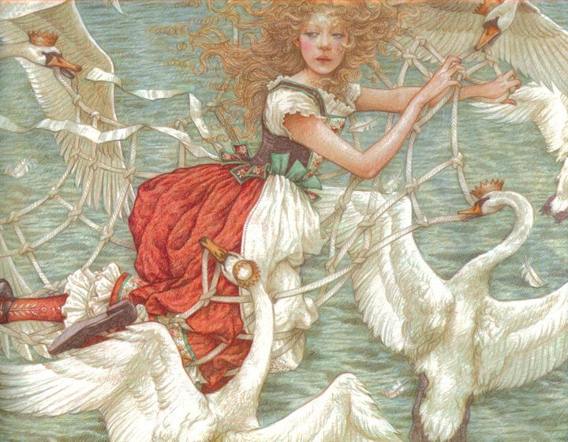
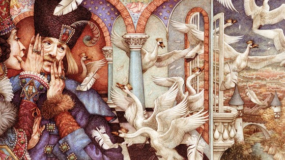
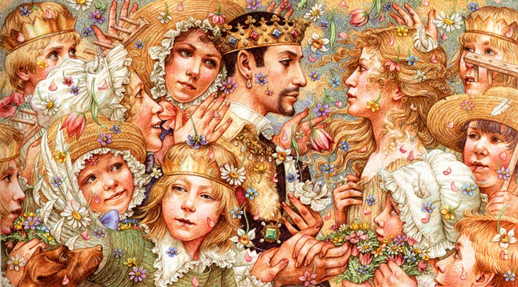
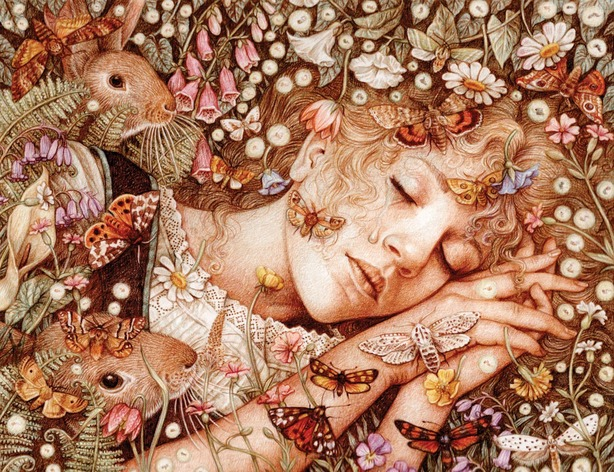

The Story in Order
- A king has eleven sons and a daughter, Elisa. He remarries a wicked queen who
despises the children. - The queen sends Elisa to live with peasants and turns the king against his sons.
She tries to curse them but instead transforms them into eleven swans, who fly away. - Elisa grows up among peasants, becoming very beautiful. At 15, she returns to the
palace. - The jealous queen tries to curse Elisa with three toads, then disfigures her with
ointment and matted hair. The king does not recognize her, and Elisa wanders into the forest. - An old woman in the forest tells Elisa she has seen eleven swans with golden crowns.
That evening, Elisa witnesses the swans transform back into her brothers at sunset. - The eldest brother explains their curse: swans by day, men by night. They live across
the sea and can only travel home on the two longest days of the year.-

-
- The brothers weave a net and carry Elisa across the ocean, barely reaching the midpoint
rock in time before nightfall. - They arrive in their distant land. Elisa dreams of Fata Morgana, who appears as the old
woman and reveals how to break the curse. - To free her brothers, Elisa must weave eleven long-sleeved tunics from stinging nettles
— without speaking a single word until the task is complete, or her brothers will die. - Elisa begins the painful work. A king from a nearby land discovers her and, struck by her
beauty, brings her to his palace and makes her his queen.
- The Archbishop suspects Elisa of witchcraft, but the king marries her regardless and has her
nettle yarn stored safely in a special room. - Each night Elisa secretly knits the tunics. When she runs out of yarn mid-way through
the seventh tunic, she secretly gathers nettles from the churchyard at night,
passing a gathering of witches unharmed.-

-
- The Archbishop witnesses her in the churchyard and reports it to the king. Elisa is put
on trial and condemned to burn at the stake. - On the night before her execution, mice in her prison cell help her gather nettles to
finish the final tunic. - On the way to her execution, Elisa keeps knitting. The eleven swans descend and shield
her. She throws the tunics over them — all eleven brothers are restored. The youngest has
a swan wing instead of one arm, as the last sleeve was unfinished. - Elisa declares her innocence. The eldest brother confirms her story. A white flower
blooms and is placed on her heart — she awakens in peace. A wedding procession returns
joyfully to the palace.
Key Themes

- Sacrifice – Elisa endures pain, silence, and near-death to save her brothers
- Innocence vs. Evil – Elisa's purity protects her from curses and witches
- Perseverance – she never stops working, even on the way to her execution
- Jealousy and cruelty – the wicked queen's envy drives the entire tragedy
- Faith and redemption – prayer and goodness ultimately triumph